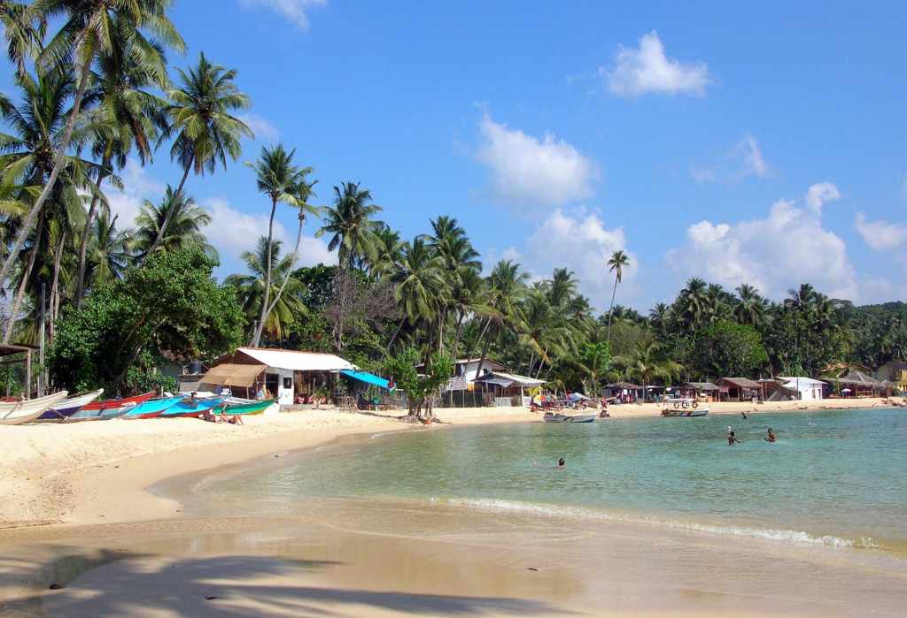
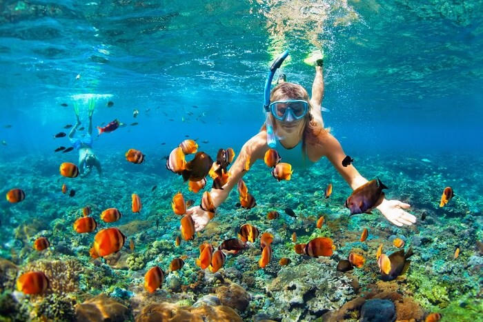

On this list of best beaches in Sri Lanka, a name sure to appear is Unawatuna Beach. Just an hour away from Sri Lanka’s capital city, Colombo, this beach is a heaven for beach bums. With fancy restaurants, bars, shacks, beach properties, shopping streets and fun activities worth engaging in that are carried out in the surrounding areas, Unawatuna beach is a great spot to unwind, ditching the routine.The beach looks like a banana and has golden sand with sparkling water. Here, the lush palm trees not only make the beach look extra scenic but also contribute to keeping the environment pleasant on most days.The beach also has arrangements of sunbeds, mats, and umbrellas which also prove to be a blessing for anybody who decides to watch the sun take a dip in the ocean whilst reveling in the sundowner.Tourists can avail of these sunbeds on rent from vendors that are easily spotted here. The local Sri Lankan culture reflects through various features at the beach. From attractive restaurants that serve finger licking local cuisine to shops that sell trendy clothes influenced by the local attire, this famous beach is worth a few hours of your time!


Hikkaduwa is one of the best surfing spots in Sri Lanka, offering a clear hot water base. The waves vary in size from 4 to 11 feet. Surfing in the Hikkaduwa area is fairly well known and gets the best surfing during its dry season, which is from November to March. There are 4 hotspots in Hikkaduwa. Scuba diving and diving in clear waters are a major past time along this stretch and is the most ecological way to see the colorful fish that dart around. The coral sanctuary along the coast of Hikkaduwa is a large shallow body of water surrounded by a reef, decorated with layers of multicolored corals, and is home to countless colorful fish. Off the beach there is a collection of small islets surrounded by beautiful coral formations. Many species of fish and large turtles are found here.The impressive coral reef lies just offshore and is still populated with exotic fish and sea turtles. Glass bottom boats are available for visitors who want to admire the wonders of deep while keeping their feet dry! After a short distance south of the center of the reef, it decreases and begins a wider sandy beach with good waves ideal for board surfing and body surfing.

Nilaveli and Uppaveli Sri lanka
Trincomalee is a world renowned natural deep water harbour, located 257kms Northeast of Colombo. The bay is large and secure and is accessible by all types of crafts in any weather. The Trincomalee beaches are popular for whale watching, fishing and scuba diving. Apart from its tranquil beaches, the city boasts of the largest Dutch fort in Sri Lanka, its naval bases and its air force base.Nilaveli is a quiet pristine beach on the Northeast coast of Sri Lanka. It is a tranquil haven with soft waves, pure white sand, and the soothing sound of the sea.Uppaveli is another beautiful and serene beach close to Trincomalee, which offers plenty of comfortable accommodation in the area, for those who can’t seem to get away from bliss.